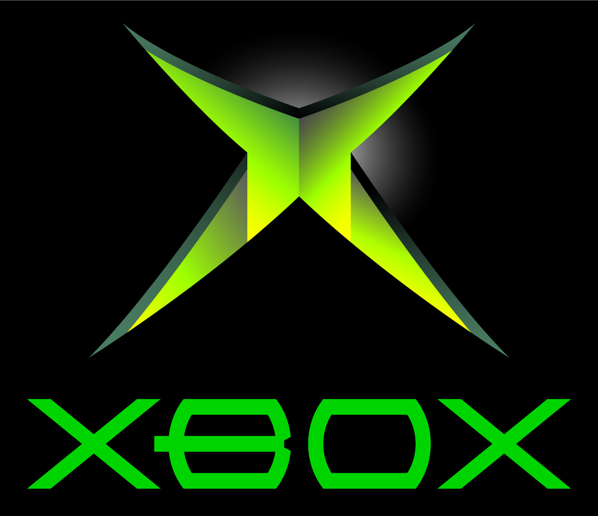

Xbox Clássico
O Xbox clássico, lançado pela Microsoft em 2001, foi o primeiro console da
empresa e marcou sua estreia no mercado de videogames. Equipado com um processador
Intel Pentium III de 733 MHz, 64 MB de RAM e uma GPU NVIDIA NV2A, o console ofereceu
gráficos avançados para a época e foi o primeiro a incluir um disco rígido interno
de fábrica, permitindo salvar jogos sem memory cards. Utilizava discos DVD como
mídia e trouxe suporte à Xbox Live, inaugurando o modelo de jogo online nos consoles
de forma robusta. Seu design robusto e controle original ("Duke") se tornaram icônicos.
Com cerca de 24 milhões de unidades vendidas, o Xbox original construiu as bases para
o sucesso da marca, com títulos marcantes como Halo: Combat Evolved, Fable e Ninja Gaiden.
Necessário instalar a ROM do Xbox Clássico